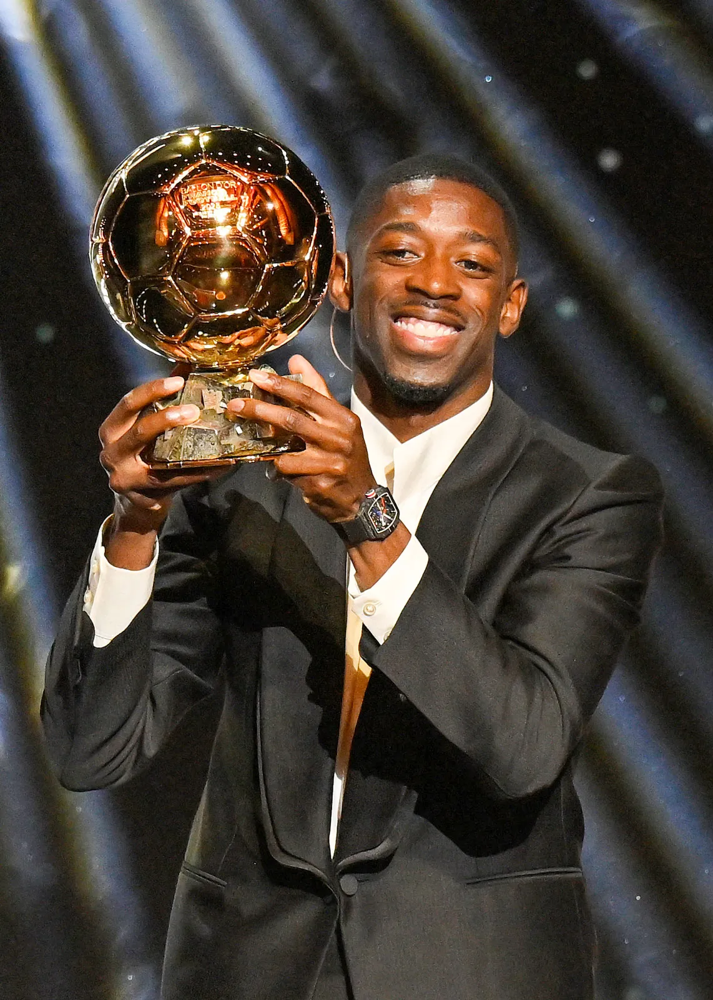

Ousman Dembele
Ousman Dembele has won an ballon d'or
Ousman Dembele has won an ballon d'or.the first person to score a goal against arsenal in champions league final this year. he scored 35 goals and provided 14 assists, led the club to a historic treble including their first-ever UEFA Champions League title.

multiple ballon d'or winner have been proven to be the best soccer players
Multiple Ballon d'Or winners are widely considered the best soccer players because they score many goals, help their teams win big trophies, and play with amazing skill all year long.the ballon d'or works by listing of 30 nominees is chosen by experts, and international sports journalists vote to pick the winner
A lot of Ousman Dembele's teammates have been great. for example desire doeue
osmane dembele became a proessional footballer
he startted playing football in evreux, france, and was noticed by scouts when he was around 13 years old, leading him to join the stade rennais acadamy. he developed quickly and signed his fistst professional contract with rennes in 2015 at age 18.
why ousmane dembele have so much criticism
high price tags, frequent injuries, and early struggles with professional discipline, poor diet, and chronic lateness.He missed over 100 games across multiple seasons, preventing him from building any sustained rhythm or match fitness.
ousmane dembele struggled with money
money was very tight and resources were scarce.Also his multi-million-euro contracts and transfer fees heavily strained his clubs.FC Barcelona signed dembele in 2017 for a staggering 105 million plus up to 40 million in add-ons, making him one of the most expensive players ever at the time.
